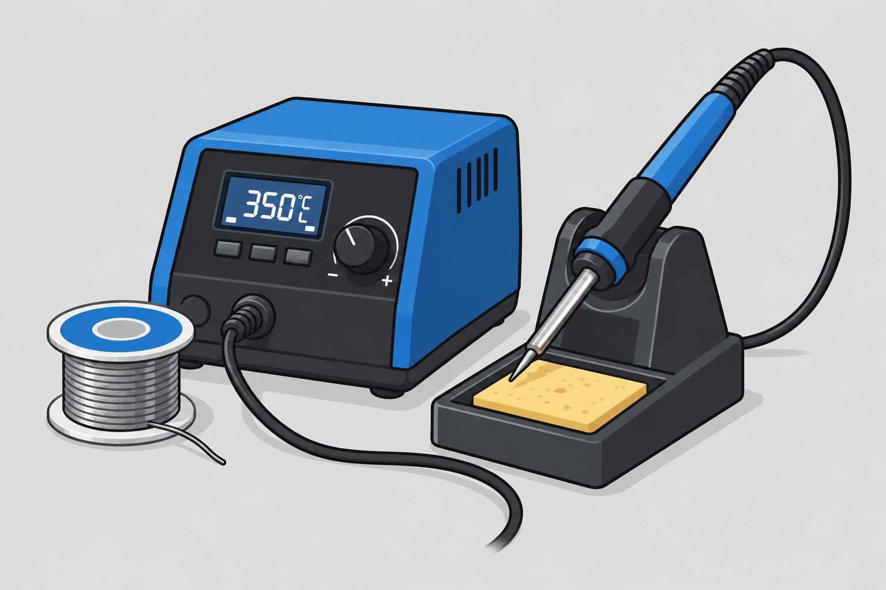

01
Prepare Your Materials
Make sure the parts are clean, stable, and positioned so they will not move during soldering. If you are joining wires, strip only the amount of insulation needed and keep the exposed conductors neatly arranged.
